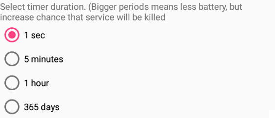

Out of Process Algorithm
Out of process algorithms are external apps which function is to perform data processing that is not directly provided by xDrip+.
They are only used for Libre sensors and bridges now.
There are two different families of Out Of Process Algorithms (OOP):
| OOP Version | Version date | Supported sensors | File size |
|---|---|---|---|
| OOP1 (2bb9458) | 2018-08-26 | Libre | 17.1MB |
| OOP1new (fa218ef) | 2019-11-22 | Libre, Libre 2 EU | 25.3MB |
| OOP1us (e901151) | 2019-09-13 | Libre 14 days US (old) | 27.8MB |
| OOP2 (70129ac) | 2021-12-04 | Libre 2 EU | 2.63MB |
| OOP2new (93e5cac) - do not use | 2020-12-08 | Libre 14 days US, Libre 2 EU | 2.65MB |
| OOP2 1.2 (8a0ee8f) | 2022-06-10 | Libre 14 days US (old), Libre 2 EU | 2.66MB |
| OOP2_e6 (6de6678) | 2023-01-10 | Libre 14 days US (new), Libre 2 EU | 2.66MB |
OOP1⌁
Old Android versions ONLY
Maximum supported Android version is 9.
Few Android 10 and above phones have been reported to be functioning with OOP1new/OOP1us.
OOP1 provides readings similar to the vendor reader without calibrating. You need a compatible bridge if using any. OOP1 also applies to NFC scan results.
No calibration possible
Calibrations will be ignored when using OOP1.
This is a safety feature as xDrip+ cannot perform sanity checks on data provided by OOP1.
Two versions are available: Libre 1 and Libre 2 EU or Libre 14 Days US.
Note: you need to be logged into your Google account to access the links above
Out Of process Algorithm must be enabled when using OOP1.
OOP2⌁
OOP2 provides decoding for the Libre 14 days US and the Libre 2 EU sensor, either for direct connection (Libre 2 EU only) or using a compatible bridge.
Calibration is optional
You can either calibrate from raw data, not calibrate or add a calibration to native data.
Check the OOP2 settings.
Use only the latest OOP2 app. Latest xDrip+ versions will not work with older OOP2 apps.
Note: you need to be logged into your Google account to access the link above
Warning
Out Of process Libre Algorithm must be disabled when using OOP2.
Auto-detection⌁
Some older xDrip+ versions will detect the presence or necessity of the out of process algorithm.
Make sure you enable it only for OOP1 and not for OOP2.

Settings⌁
Use service corresponds to switching ON or OFF the OOP app. If you want to use it it must be enabled.
Foreground service is an addition that makes it less probable the app will be put to sleep by the phone.
Enable it if you have data loss (recommended).
Direct intent can be enabled if your standalone Wear OS smartwatch requires it (bridge necessary).
You can select the period at which OOP will make sure it's available.
When having data loss you can reduce the interval. The less the interval, the more battery use it will require.
